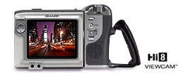

|

- Time/Date Display and Record
- Battery and Tape Remaining Indicators
- Video Outputs - Composite/S-Video
- Audio Outputs - Left/Right
- Microphone Input
- External Input Recording
- 16:9 Wide Screen Mode
- Self Message Recording
- Easy/Advanced User Modes
- Snapshot Still 5-Second Recording
- Strobe Recording
- Quick Return Function
- 4.0 Lux Minimum Illumination
- Supplied Accessories:
- Remote Control
- Audio/Video Dubbing Cables
- Battery Pack Lithium Ion 1,100 mAH
(BT-L241U)
- One Lithium Ion Batteries (CR2025)
- Two AA Batteries
- Shoulder Strap
- Protective Lens Cap
|